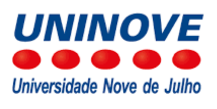

Leonardo Vils
Professor e Pesquisador
PPGA: Programa de Pós-graduação em Administração
PPGP: Programa de Pós-graduação em Gestão de Projetos
💾 Salvar Contato na Agenda
📱 WhatsApp
📧 E-mail Institucional
📧 E-mail Pessoal
📄 Currículo Lattes
🆔 ORCID
🔗 LinkedIn